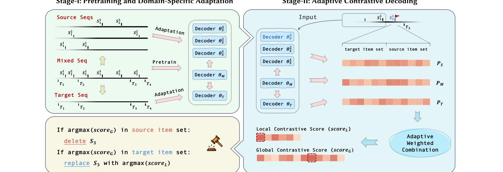
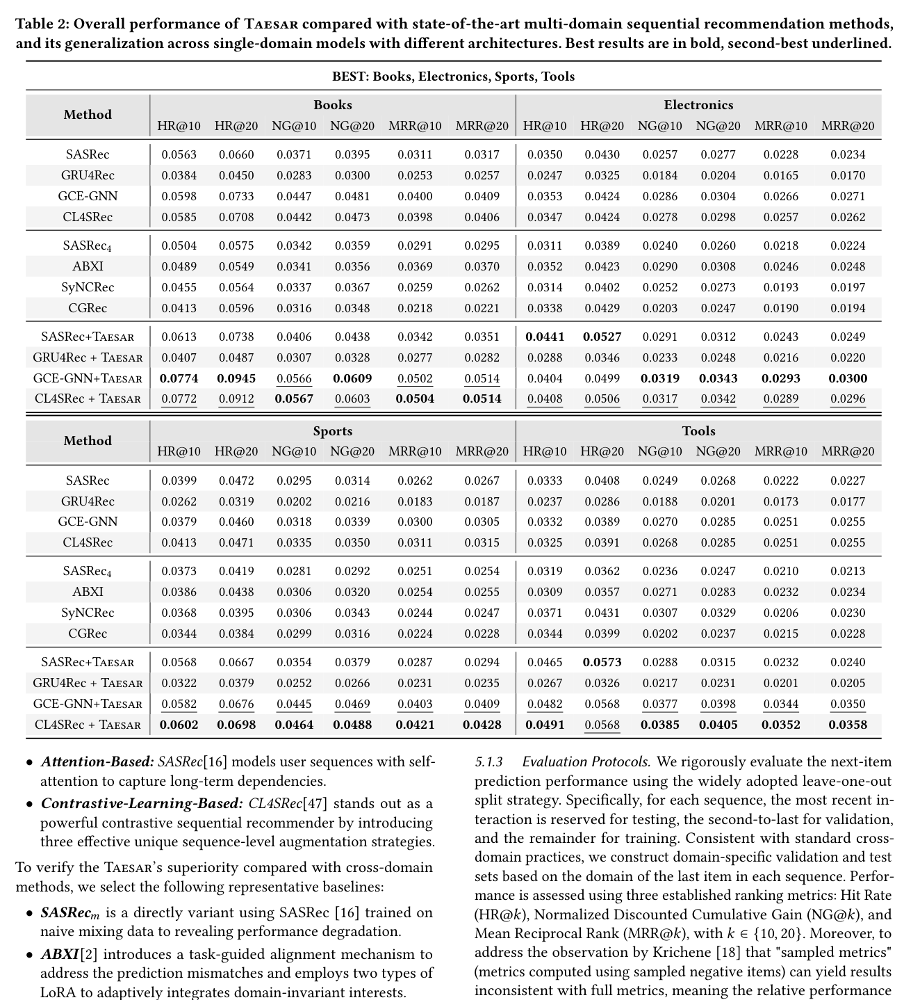
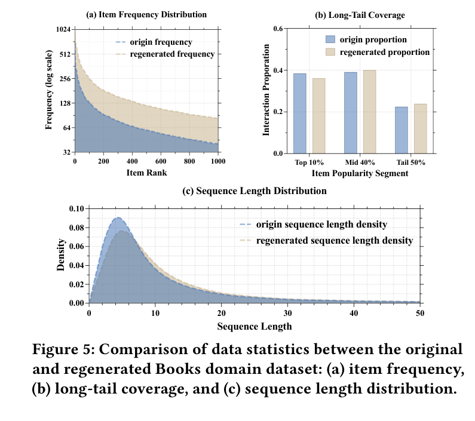

Learn mixed, source-domain, and target-domain decoder views from cross-domain sequences.
WWW 2026
Generative Data Transformation
A target-aligned data-centric framework that regenerates mixed-domain user sequences into unified data for multi-domain sequential recommendation.
Jiaqing Zhang, Mingjia Yin, Hao Wang, Yuxin Tian, Yuyang Ye, Yawen Li, Wei Guo, Yong Liu, and Enhong Chen. Generative Data Transformation: From Mixed to Unified Data. In Proceedings of the ACM Web Conference 2026 (WWW '26), April 13-17, 2026, Dubai, United Arab Emirates. Paper: arXiv:2602.22743; DOI: 10.1145/3774904.3792124.

1. Method: Target-Aligned Sequence Regeneration
Taesar attacks the domain gap at the source level: it transforms mixed-domain histories into target-aligned sequences before standard sequential recommenders are trained.
Use local and global contrastive scores to identify source items that hurt target alignment.
Delete or replace source-domain items, then train recommenders on the enriched target-aligned data.
2. Code
The repository uses Hydra configuration and exposes separate stages for pretraining, decoding, and fine-tuning.
conda env create --name Taesar --file environment.yml
conda activate Taesarbash run.shpython pretrain.py -m stage=run gpu_id=0 seed=2025
python decoding.py -m stage=dec target_dom=dom1 gpu_id=0 seed=2025
python finetune.py -m stage=tun train_type=full target_dom=dom1 gpu_id=0 seed=20253. Experimental Highlights
Taesar improves multi-domain sequential recommendation by producing regenerated data whose statistics better align with the target domain.
BEST
Four-domain benchmark
Experiments cover Books, Electronics, Sports, and Tools under multi-domain recommendation.
+Data
Data-centric gains
Taesar improves several single-domain model backbones by changing training data quality.
Stats
Distribution alignment
Regenerated data better matches target-domain frequency, long-tail, and sequence-length behavior.


4. Citation
@inproceedings{zhang2026generative,
title = {Generative Data Transformation: From Mixed to Unified Data},
author = {Zhang, Jiaqing and Yin, Mingjia and Wang, Hao and Tian, Yuxin and Ye, Yuyang and Li, Yawen and Guo, Wei and Liu, Yong and Chen, Enhong},
booktitle = {Proceedings of the ACM Web Conference 2026},
series = {WWW '26},
year = {2026},
doi = {10.1145/3774904.3792124}
}